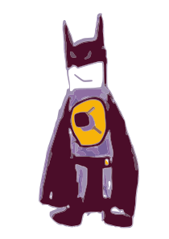

L'assistant de l'arbitre de club de tennis de table.
Nouvelle partie
Fin de la partie
Aide-mémoire
- Manche gagnée à 11 points avec 2 points d'écart.
- À 10-10, le service change à chaque point ; sinon tous les 2 points.
- Le premier serveur alterne à chaque manche.
- On change de camp à chaque manche ; dans la manche décisive, dès qu'un joueur atteint 5 points.
- Annonce du score : serveur d'abord, puis relanceur.
- 1 temps mort par joueur (ou par paire) et par partie (max 1 min).
- Essuyage autorisé tous les 6 points.
En double
- Le service va en diagonale (demi-camp droit vers demi-camp droit).
- Le serveur change tous les 2 points et le relanceur devient serveur.
- La paire qui sert désigne son serveur ; le relanceur est désigné en conséquence.
- Manche décisive : à 5 points, on change de camp et on inverse l'ordre des relanceurs.
Règle d'accélération
- Déclenchée après 10 min de jeu si moins de 18 points, ou à la demande des 2 joueurs. Une fois active, elle le reste jusqu'à la fin.
- Le serveur change à chaque point.
- Si le relanceur réussit 13 renvois, le serveur perd le point.
Cartons & sanctions
- 1re faute : 🟨 carton jaune (avertissement, sans point).
- 2e faute : 🟨🟥 jaune + rouge, +1 point à l'adversaire.
- 3e faute : 🟨🟥 jaune + rouge, +2 points à l'adversaire.
- 4e faute : 🟥 recours au juge-arbitre (partie perdue par pénalité).
Déroulé de la partie
Les étapes d'une partie, dans l'ordre, avec les rappels clés.
-
1 · Avant d'arbitrer
Je vérifie ma tenue (tenue de ville, chaussures de salle) et mon matériel : pige, cartons (3 jaunes, 3 rouges, 2 blancs), jeton bicolore, chronomètre, chiffon, crayon. Je me rapproche du juge-arbitre.
À ce stade je ne dois pas oublier : écouter les consignes particulières, recevoir la fiche de la partie, y noter mon nom, prendre la (les) balle(s), et être à l'heure. -
2 · Entrée dans l'aire de jeu
Je vérifie les conditions matérielles : marqueur à blanc, filet (hauteur à la pige, alignement, tension), séparations alignées, éclairage, sol ni glissant ni réfléchissant.
À ce stade je ne dois pas oublier : rien ne doit être posé sur les séparations, et je signale tout problème matériel au juge-arbitre (seul habilité à décider). -
3 · Arrivée des joueurs
J'affiche « 0 – 0 » manches, je vérifie les dossards et l'identité, je fais désigner le(s) conseilleur(s), je contrôle les tenues (couleurs différentes de la balle) et les raquettes.
À ce stade je ne dois pas oublier : afficher 0 – 0 manches ; en cas de doute sur une tenue ou une raquette, en référer au juge-arbitre. -
4 · Tirage au sort
Jeton bicolore. Le vainqueur choisit le service/la relance OU le camp ; l'adversaire prend l'autre possibilité. En double, la paire qui sert désigne son serveur, puis la paire qui relance son relanceur.
À ce stade je ne dois pas oublier de NOTER : le côté du premier service, le premier serveur (et, en double, le premier relanceur). Le premier service se fera toujours du même côté. -
5 · Période d'adaptation
Je donne la balle de la partie et je démarre le chronomètre. Le marqueur reste sur « 0 – 0 » manches.
À ce stade je ne dois pas oublier : 2 minutes maximum, et le marqueur reste à 0 – 0 manches. -
6 · Début de la partie
Je mets le marqueur à 0 – 0 points, je désigne le serveur de la main et j'annonce : « 1ère manche, (nom du serveur), 0 – 0 ». Je démarre le chronomètre de la manche.
À ce stade je ne dois pas oublier : annoncer manche + nom du serveur + 0 – 0 ; lancer le chrono (10 min : si < 18 points, la règle d'accélération s'appliquera). -
7 · Pendant la manche
Je surveille le service (ordre, camp), je juge la régularité et le filet, je décide obstruction / point / balle à remettre, et j'annonce la marque à chaque point.
À ce stade je ne dois pas oublier : annoncer la marque à CHAQUE point, serveur d'abord ; le service change tous les 2 points (à chaque point dès 10 – 10) ; essuyage possible tous les 6 points ; 1 temps mort par joueur ou par paire. -
8 · D'une manche à la suivante
Manche gagnée à 11 points avec 2 points d'écart. J'annonce le gagnant puis le score, j'arrête puis relance le chrono (repos 1 min), je récupère la balle et je note le score sur la fiche.
À ce stade je ne dois pas oublier : remettre le marqueur à blanc au retour des joueurs ; changer de camp ; alterner le premier serveur ; en double, désigner serveur et relanceur ; afficher le gain de la manche. -
9 · Fin de la partie
J'annonce le résultat final (ex. : « Pierre gagne 3 manches à 2 »), je note le score sur la fiche et je la signe. Je récupère la balle et je remets le marqueur à blanc.
À ce stade je ne dois pas oublier : faire signer la fiche par tout joueur sanctionné (en individuel) ; remettre le marqueur à blanc ; rapporter la fiche au juge-arbitre.
Bayard Argentan Tennis de Table
Depuis plus de 25 ans, le ping pour tout le monde — et on insiste sur tout le monde.
Quand un même club aligne des joueurs du baby-ping au plus haut niveau, des valides et des para qui visent les Jeux, du loisir tranquille jusqu'à la compétition à tous les étages… c'est qu'il y a forcément une table pour toi. Même si tu n'as jamais tenu une raquette : surtout si tu n'as jamais tenu une raquette, en fait. 🏓
Nos sections
- 👶 Initiation / Baby-pingLes premiers rebonds, en s'amusant.
- 🎈 LoisirLe ping plaisir, sans pression.
- 🏆 CompétitionDe la D départementale au plus haut niveau.
- ⭐ Équipe ProLe haut niveau qui fait rêver les jeunes.
- ♿ Section HandisportLe parasport au cœur du projet du club.
- 🥇 Centre de Préparation aux JeuxLà où l'on prépare les grands rendez-vous.
La salle
- 30 tables rien que pour taper la balle.
- Un club-house pour refaire les matchs autour d'un verre (de sirop, hein).
- Une salle de préparation et un système vidéo pour progresser.
Nous trouver & nous contacter
- 📍 33 rue du Paty, 61200 Argentan
- ✉️ bayardtt@wanadoo.fr
- 📞 06 50 50 60 27
- 🕘 Lun–Ven 9h45–20h30 · Sam 9h45–12h30
Et nous, on arbitre avec amour grâce à arBATT. 🦇🏓
Période d'adaptation
Prêt
Désignation du service
Qui sert ?
Qui relance ?
Carton / sanction
Quel joueur sanctionner ?